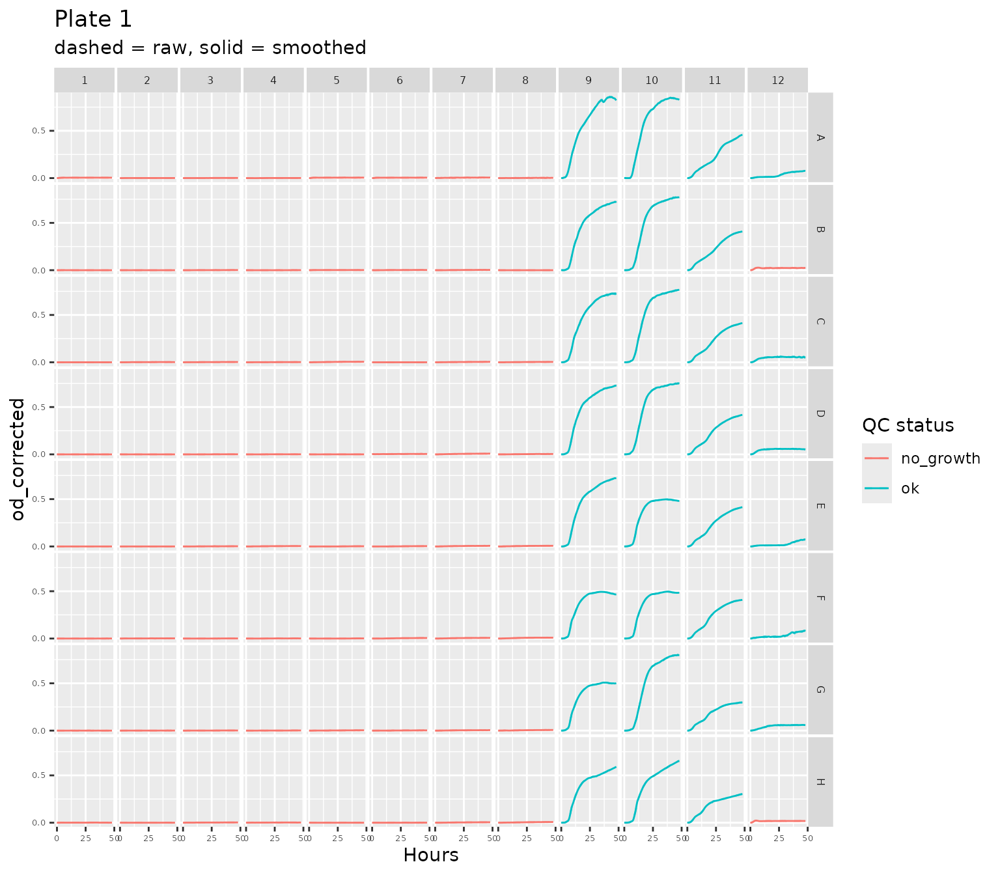
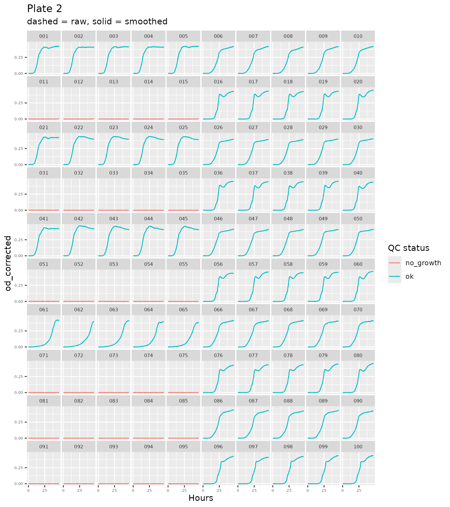

Read, QC and plot plate reader data
plateReadeR.RmdplateReadeR reads output files from plate readers into a tidy table and offers a few basic quality control (QC) steps. This vignette walks through the whole workflow on a LogPhase600 plate: read, flag, blank-correct, smooth and plot. Joining the data to sample metadata is left to you.
Read
Each reader returns one row per well per time point. Time is in
elapsed seconds/hours. These are snapped to a regular grid with
snap_hours(), so that plates from different runs are
harmonized and can later be joined or aligned. This is necessary because
there is sometimes some drift that prevents joining by elapsed time.
| Function | Instrument | Format |
|---|---|---|
read_logphase_txt() |
LogPhase600 | text, one file per plate |
read_logphase_xlsx() |
LogPhase600 | Excel; sheet = "raw", "results" or
"procedure", all plates combined. Returns one tibble for
all plates |
read_synergy_xlsx() |
Synergy H1 | Excel time course; sheet = "raw",
"results" or "setup"
|
read_synergy_endpoint() |
Synergy H1 | Excel single time point |
read_bioscreen() |
Bioscreen C | UTF-16 text or csv, one or two 100-well plates |
f <- system.file("extdata", "logphase600_plate1.txt", package = "plateReadeR")
d <- read_logphase_txt(f)
d
#> # A tibble: 13,920 × 5
#> seconds hours well od plate_id
#> <dbl> <dbl> <chr> <dbl> <chr>
#> 1 0 0 A01 0.116 Plate 1
#> 2 1200 0.333 A01 0.116 Plate 1
#> 3 2400 0.667 A01 0.116 Plate 1
#> 4 3600 1 A01 0.117 Plate 1
#> 5 4800 1.33 A01 0.117 Plate 1
#> 6 6000 1.67 A01 0.118 Plate 1
#> 7 7200 2 A01 0.119 Plate 1
#> 8 8400 2.33 A01 0.119 Plate 1
#> 9 9600 2.67 A01 0.119 Plate 1
#> 10 10800 3 A01 0.119 Plate 1
#> # ℹ 13,910 more rowsExcel exports hold several different sheets for each plate. The most
useful one is the “Raw Data” sheet but sometimes the “Summary” sheet is
useful to determine how the Logphase600 calculated different growth
parameters (e.g., lagtime and growth rate). The “Procedure” sheet
describes the different technical specifications of the run. The
funcitons read_logphase_xlsx() and
read_synergy_xlsx() can read each of these sheet types
using the paramter sheet. The procedure sheet is parsed
into one row per plate:
xf <- system.file(
"extdata",
"logphase600_example.xlsx",
package = "plateReadeR"
)
read_logphase_xlsx(xf, sheet = "procedure")[c(
"plate_id",
"runtime_hours",
"interval_hours",
"shaking_rpm",
"wavelength_nm",
"temperature_setpoint_c"
)]
#> # A tibble: 2 × 6
#> plate_id runtime_hours interval_hours shaking_rpm wavelength_nm
#> <chr> <dbl> <dbl> <dbl> <dbl>
#> 1 Plate 1 48 0.333 600 600
#> 2 Plate 2 48 0.333 600 600
#> # ℹ 1 more variable: temperature_setpoint_c <dbl>Wells are only identified using plate_id and
well, in every reader. You will need to join these to your
own metadata file to make them unique across runs.
Flag saturated and negative OD
flag_od_range() adds well-level flags for wells that
have either negative OD values or values that exceed a threshold value.
This saturation value needs to be selected by the user.
There is no default.
d <- flag_od_range(d, saturation = 2)
table(unique(d[c("well", "flag_saturated", "flag_negative")])[-1])
#> flag_negative
#> flag_saturated FALSE
#> FALSE 96Blank-correct
If you plate has blank wells (it should!)
blank_correct() can subtract blank wells from all other
wells, with an OD floor at 0. With no blank supplied, it is
assumed that the first 5 reads in a well are not measuring growth so
these are averaged as a “pseudo-blank” and then subtracted.
d <- blank_correct(d)
d[d$well == "A09", c("hours", "od", "blank_od", "od_corrected")][1:5, ]
#> # A tibble: 5 × 4
#> hours od blank_od od_corrected
#> <dbl> <dbl> <dbl> <dbl>
#> 1 0 0.119 0.120 0
#> 2 0.333 0.12 0.120 0
#> 3 0.667 0.12 0.120 0
#> 4 1 0.121 0.120 0.000600
#> 5 1.33 0.122 0.120 0.00160Alternatively, you can name the blank wells. They are matched by time within the same plate. If multiple blanks are supplied they are averaged. (Not run here, because which wells are blanks depends on your plate layout.)
blanks <- data.frame(plate_id = "Plate 1", well = c("A01", "B01"))
blank_correct(d, blank = blanks)Flag wells with no growth
flag_no_growth() flags wells whose corrected OD never
increases past the min_rise OD threshold. The default of
0.05 is a starting point: check it against wells you know do and do not
grow.
d <- flag_no_growth(d, min_rise = 0.05)
table(unique(d[c("well", "flag_no_growth")])$flag_no_growth)
#>
#> FALSE TRUE
#> 30 66Smooth
Smoothing is off by default. smooth_od() applies a
5-point centered rolling mean to each well. It adds
od_corrected_rollmean, leaving the raw and corrected
columns intact. (blank_correct(smooth = TRUE) does the same
in one step.)
Plot
plot_plate() draws one panel per well for one plate.
Curve color shows QC status. A well with no flags is "ok",
and a well with several flags shows them joined with +.
With smooth = TRUE the smoothed curve is overlaid on the
raw one.
plot_plate(d, plate = "Plate 1", smooth = TRUE)
A Bioscreen run
read_bioscreen() handles the Bioscreen C text export,
which is UTF-16 with comma decimals; both are detected and converted
automatically. A Bioscreen C run holds one or two 100-well plates, with
wells 1 to 100 on plate 1 and 101 to 200 on plate 2. Wells are named by
a zero-padded well within each plate_id
("001" to "100"), so the key is the same
plate_id and well pair as for the LogPhase600.
The position in the run (1 to 200) is kept as well_index.
The Blank column the instrument writes is always zero
(don’t understand what this is for). This is dropped by default.
The file below is a complete two-plate run, 567 reads at about 5-minute intervals over 47 hours, stored xz-compressed (readers can read compressed files directly).
bf <- system.file("extdata", "bioscreen_full.txt.xz", package = "plateReadeR")
b <- read_bioscreen(bf)
b
#> # A tibble: 113,400 × 6
#> seconds hours plate_id well well_index od
#> <dbl> <dbl> <chr> <chr> <int> <dbl>
#> 1 0 0 Plate 1 001 1 0.072
#> 2 300 0.0833 Plate 1 001 1 0.072
#> 3 600 0.167 Plate 1 001 1 0.072
#> 4 900 0.25 Plate 1 001 1 0.072
#> 5 1200 0.333 Plate 1 001 1 0.072
#> 6 1500 0.417 Plate 1 001 1 0.072
#> 7 1800 0.5 Plate 1 001 1 0.072
#> 8 2100 0.583 Plate 1 001 1 0.072
#> 9 2400 0.667 Plate 1 001 1 0.072
#> 10 2700 0.75 Plate 1 001 1 0.073
#> # ℹ 113,390 more rowsThe same QC steps from the logphase600 apply to the bioscreen. Here
the smoothed curve is added during blank correction with
smooth = TRUE.
b <- b |>
flag_od_range(saturation = 2) |>
blank_correct(smooth = TRUE) |>
flag_no_growth()
unique(b[c(
"plate_id",
"well",
"flag_saturated",
"flag_negative",
"flag_no_growth"
)]) |>
subset(select = -well) |>
aggregate(
cbind(flag_saturated, flag_negative, flag_no_growth) ~ plate_id,
data = _,
FUN = sum
)
#> plate_id flag_saturated flag_negative flag_no_growth
#> 1 Plate 1 0 0 0
#> 2 Plate 2 0 0 30Wells on a Bioscreen plate are laid out as a square grid of numbers
rather than lettered rows, so plot_plate() draws them as a
10 by 10 grid.
plot_plate(b, plate = "Plate 2", smooth = TRUE)